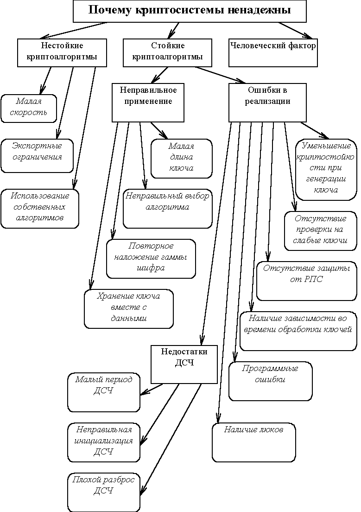

Выделим следующие причины ненадежности криптографических программ (см. рис. 3):
Невозможность применения стойких криптоалгоритмов.
Ошибки в реализации криптоалгоритмов.
Неправильное применение криптоалгоритмов.
Человеческий фактор.
Отметим сразу, что указанные причины покрывают только два вида потенциально возможных угроз: раскрытия и целостности, оставляя в стороне угрозу отказа в обслуживании, которая приобретает все большее значение по мере развития распределенных криптосистем.

Рис. 3. Причины ненадежности криптосистем